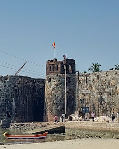

सिंधुदुर्ग किल्ला
Location : Click Here For Google Map
- माहिती
- सिंधुदुर्ग किल्ला महाराष्ट्र राज्याच्या सिंधुदुर्ग जिल्ह्यात स्थित एक ऐतिहासिक किल्ला आहे. हा किल्ला मालवण शहराच्या किनाऱ्यावर असलेल्या एक अत्यंत सुंदर ठिकाणी आहे. सिंधुदुर्ग किल्ला १६७५ मध्ये छत्रपती शिवाजी महाराजांनी बांधला. किल्ल्याची बांधणी समुद्र किनाऱ्यावर असल्यामुळे तो एक उत्तम संरक्षण गड होता.
किल्ल्याच्या प्रवेशासाठी एक जलमार्ग होता, आणि किल्ल्याची रचना त्या काळातील अत्याधुनिक स्थापत्यशास्त्राचे उदाहरण आहे. किल्ल्याच्या भिंती, गोविंद आणि देवी मंदिर, आणि किल्ल्याच्या शिखरावरून दिसणारा समुद्राचा दृश्य एक अद्वितीय अनुभव देतो. किल्ल्याच्या सभोवतालच्या भागात एक निसर्ग सौंदर्य आहे, ज्यामुळे किल्ला पर्यटकांमध्ये अत्यधिक लोकप्रिय आहे.
सिंधुदुर्ग किल्ला आज एक प्रमुख पर्यटनस्थळ आहे आणि त्याचे ऐतिहासिक महत्त्व आणि सुंदरता पाहण्यासाठी देशभरातून पर्यटक येथे येतात. किल्ल्याच्या परिसरातील समुद्र आणि निसर्ग सौंदर्य अनेक ट्रेकर्स आणि साहसी व्यक्तींना आकर्षित करते.
Explore the historical beauty
